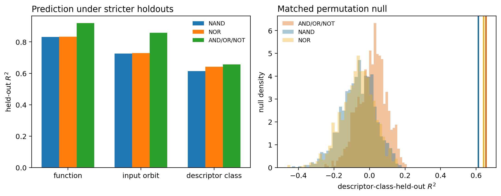
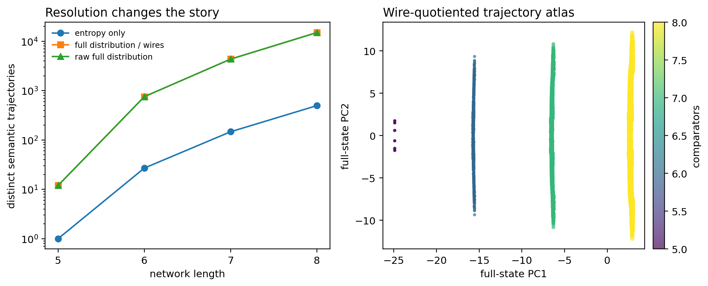

Creativity as Constrained Rarity
Exact experiments in finite program spaces
A useful operational picture of creativity combines successful structure preservation, compression, and low probability. This note tests that picture in two spaces that can be enumerated exactly: all three-input Boolean functions in three formula languages and all correct four-input comparator networks through length eight. Semantic properties predict synthesis difficulty even after stringent group holdouts and matched null tests. However, rarity, compression, and apparent geometric rigidity change with the representation language, prior, and resolution. The evidence supports constrained rarity as a diagnostic framework, not a representation-independent creativity score.
1. A representation-conditional formalism
Let \(E_{\mathcal L}\) be the programs expressible in language \(\mathcal L\), let \(F\) be a semantic task space, and let
$$\operatorname{eval}_{\mathcal L}:E_{\mathcal L}\rightarrow F$$map each representation to what it computes. For target \(f\in F\), its exact-length semantic fiber is
$$A_{\mathcal L,\ell}(f)=\{e\in E_{\mathcal L}:|e|=\ell, \operatorname{eval}_{\mathcal L}(e)=f\}.\tag{1}$$The minimum representation length and boundary surprisal are
$$L_{\mathcal L}^{*}(f)=\min\{\ell:A_{\mathcal L,\ell}(f)\neq\varnothing\},\qquad R_{\mathcal L}(f)=-\log_2\frac{|A_{\mathcal L,L^*}(f)|}{|E_{\mathcal L,L^*}|}.\tag{2}$$Relative to an explicit baseline compiler of length \(L_{0,\mathcal L}(f)\), define
$$G_{\mathcal L}(f)=L_{0,\mathcal L}(f)-L_{\mathcal L}^{*}(f).\tag{3}$$Correctness, compression, and rarity are best retained as a profile rather than collapsed prematurely into one number:
$$\mathcal C_{\mathcal L}(f)=\bigl(S(f),G_{\mathcal L}(f),R_{\mathcal L}(f),\psi(f)\bigr).\tag{4}$$Here \(\psi(f)\) records semantic structure. The subscripts are essential: changing the language, prior, baseline, or semantic statistic can change the result.
2. Two exactly enumerable laboratories
| Boolean formulas | Sorting networks | |
|---|---|---|
| Semantic tasks | 256 truth tables | one sorting function |
| Representations | NAND, NOR, AND/OR/NOT | six comparators |
| Correctness domain | all 8 inputs | all 24 input orders |
| Exact search | semantic dynamic programming | all words through length 8 |
| Semantic geometry | truth-table/Fourier invariants | prefix output distributions |
These universes separate two questions. Boolean synthesis asks why different semantic functions have different minimum complexity. Sorting fixes the target function and asks how its many correct implementations populate representation space.
3. Boolean functions: meaning predicts difficulty
Every three-input Boolean function was synthesized exactly in three complete languages. The semantic descriptor \(\psi(f)\) contains signed output bias, sorted variable influences, Walsh–Fourier energy by degree, algebraic degree, and input-permutation symmetry. It contains no formula syntax.
A seven-nearest-neighbor predictor initially explained \(83\%\)–\(92\%\) of minimum-size variance. That estimate was optimistic because a permuted or descriptor-identical copy of a held-out function could remain in training. Two stricter tests remove those twins.
| Language | Function held out \(R^2\) | Orbit held out \(R^2\) | Descriptor class held out \(R^2\) |
|---|---|---|---|
| NAND | 0.831 | 0.726 | 0.613 |
| NOR | 0.833 | 0.729 | 0.643 |
| AND/OR/NOT | 0.920 | 0.859 | 0.656 |
In 1,000 null repetitions, minimum sizes were shuffled within exact strata of output bias, algebraic degree, and symmetry. No null replicate reached the strict observed result in any language, giving the finite-simulation bound \(p=1/1001<0.001\).

Representation stability
The semantic signal is real but not sufficient to define an intrinsic score. Spearman rank correlations across languages are:
| Language pair | Minimum size | Boundary surprisal | Compression gain |
|---|---|---|---|
| NAND / NOR | 0.548 | 0.376 | 0.264 |
| NAND / AND–OR–NOT | 0.805 | 0.739 | 0.612 |
| NOR / AND–OR–NOT | 0.805 | 0.739 | 0.601 |
Complexity retains substantial cross-language structure. Exact rarity and compression are more sensitive to the grammar, polarity of primitive gates, and chosen baseline compiler.
4. Sorting networks: a thin boundary, viewed at two resolutions
A four-input comparator network is a word over the six unordered wire pairs. No word of length at most four sorts all inputs. Exactly 12 of the \(6^5=7{,}776\) length-five words work, so
$$P(\mathrm{sort}\mid L=5)=0.00154321,\qquad R=9.340\ \text{bits}.\tag{5}$$Correct representations become more common with length: there are 900, 16,800, and 204,120 correct words at lengths six, seven, and eight. Among those, 8.0%, 32.1%, and 49.4% have already reached the sorted state before the final comparison. This is the clean shared phenomenon: slack creates room for redundant correct representations.
Why semantic resolution matters
For a uniformly sampled input order, let \(p_t(y)\) be the distribution of output permutations after prefix \(t\). A coarse trajectory keeps only entropy
$$H_t=-\sum_y p_t(y)\log_2p_t(y).\tag{6}$$All 12 optimal networks have the same entropy curve. That does not mean they follow the same semantic path. Retaining the full 24-coordinate distribution \(p_t\), and canonicalizing a single global relabeling of the four wires, resolves 12 distinct optimal trajectories.
| Length | Correct words | Entropy paths | Full paths modulo wires |
|---|---|---|---|
| 5 | 12 | 1 | 12 |
| 6 | 900 | 27 | 756 |
| 7 | 16,800 | 147 | 4,356 |
| 8 | 204,120 | 497 | 15,036 |

5. What survives both experiments
- Correctness creates semantic fibers. Some are empty below a feasibility boundary.
- Compressed correct representations can be rare. The sorting boundary provides an exact example.
- Redundancy expands representational volume. Longer correct programs proliferate in both grammars.
- Meaning constrains complexity. Boolean semantic features predict held-out minimum size.
- The numbers are conditional. Rarity and compression depend on language, prior, and baseline.
- Geometry depends on resolution. A coarse invariant may conceal distinct semantic paths.
6. Interpretation
The experiments support neither pure subjectivism nor a universal creativity coordinate. Semantic organization places real constraints on which tasks are difficult and which compact solutions exist. Yet a numerical statement such as “this solution is rare” is incomplete without specifying the representation language and prior.
This does not establish human originality, aesthetic value, or representation-independent Kolmogorov complexity. It does provide a falsifiable framework: a proposed semantic pattern should survive group-held-out tests, matched nulls, alternative languages, and finer observational resolutions before it is treated as intrinsic.
7. Reproducibility
The complete experiments run locally without paid services:
python experiments/creativity-sorting-networks/scripts/analyze.py python experiments/creativity-boolean-synthesis/scripts/analyze.py python experiments/creativity-boolean-atlas/scripts/analyze.py python experiments/creativity-sorting-atlas/scripts/analyze.py python experiments/creativity-atlas-validation/scripts/analyze.py
Detailed methods and machine-readable results are in the experiment directories. A compact paper version is available as Rarity, Compression, and Meaning in Finite Program Spaces.